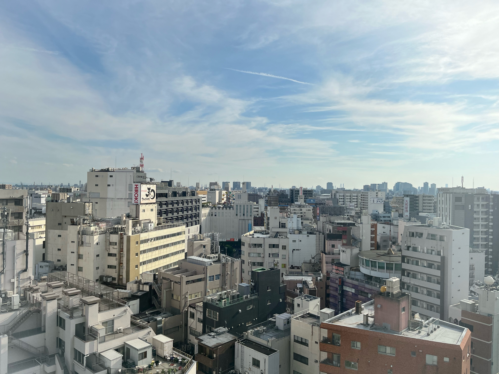
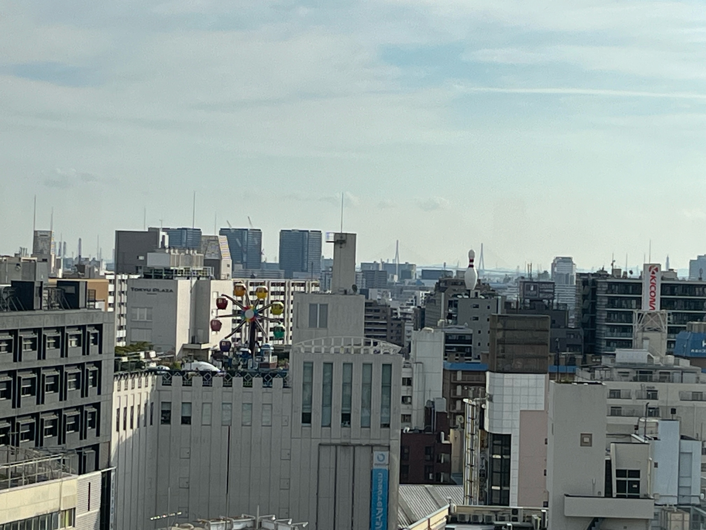

12Fの窓から見える東京の風景

碁盤の目が特徴の西蒲田。戦後大きく土地、区画などが変革されず、そのままの町を見渡せる。
1945年4月15日の空襲（城南空襲）により蒲田駅周辺は太平洋戦争末期に焦土となった。
1969年（昭和44年）11月16日、佐藤栄作首相（当時）の訪米を阻止しようとするデモ隊と機動隊が、国鉄蒲田駅（当時）東口付近で激突したほか京急蒲田駅でも火炎瓶が投げられる暴動状態となり（佐藤首相訪米阻止闘争）一帯は火の海と化した。逮捕者は1,600人を超える事態となった。
また、学生の騒動に対し地元商店街の関係者が自警団を組織して対抗し、一部では衝突する騒ぎとなった。
大田区西蒲田の"南"側の風景

3号館から見える南側は”かまたえん”の観覧車も見えます。高さ約13m。屋上遊園地の観覧車は都内でただ一つとのこと。
1968年に設置され、「東急プラザ蒲田」が一時閉店した2014年3月までの45年間、地域の人々に愛され続けてきた。
初代の通称「お城観覧車」から、1989年に二代目の「グレ太の観覧車 フラワーホイール」にバトンタッチし、今日まで親子三代のお客様にご利用いただくなど、多くのお客様に楽しい思い出を届けてきた。
そして、都内で唯一現存する屋上観覧車となり「蒲田のランドマーク」として全国に知られているよう。
大田区西蒲田の"北"側の風景
左の庭はセントラルプラザと呼ばれ前の校舎の跡地になっているよう。また北東方向にスカイツリーを望むこともできました。天気が良ければさらに富士山などほかの自然も見れそうですね。
蒲田（かまた）は、東京都大田区の町名。また、蒲田駅や京急蒲田駅を中心とした繁華街。現行行政区画は、蒲田一丁目から蒲田五丁目。そのほか、「蒲田」がつく町名としては、隣接する西蒲田、東蒲田、蒲田本町、新蒲田、南蒲田がある。
羽田空港が近隣にある地域である。